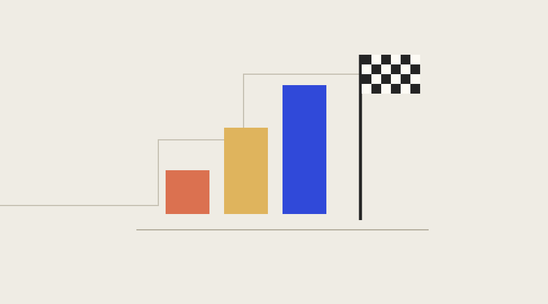

Give the agent a finish line
Thinking about what "done" means before handing over a task.

Sample text for the reading-page design. This is not a published article by Anh.
A request to keep improving something has no obvious stopping point. There is always another interaction to polish or another piece of code to rearrange. An agent needs a way to tell whether the requested work is complete.
A finish line can be ordinary and concrete. The page loads. Every card leads to the right article. The text remains readable on a phone. These are things to observe, not adjectives to agree with.
Describe a complete trip through the feature
For a gallery, checking the cards is only the beginning. Follow a card into the article, read past the cover, and find the way back. Repeat the trip using the keyboard. The destination matters as much as the first screen.
Writing that trip down before implementation makes review easier. It gives both the builder and reviewer the same actions to try, while leaving the visual details open to discussion.
Make the remaining work visible
A design preview may have a working reading page and sample content. That is a useful result, but it is different from a published collection. The preview should say which content is illustrative so a working interaction does not imply that the writing is ready.
Completion becomes easier to discuss when the result and its limits are visible together. The next task can then begin with something more precise than a request to continue.